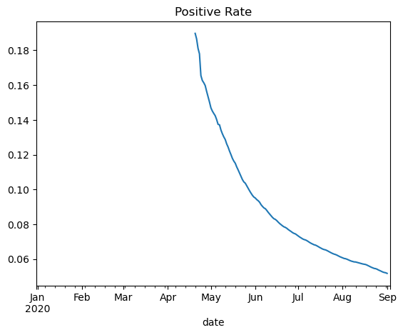

7 Analyse tabellarischer Daten mit Python und Pandas
Dieses Tutorial ist das sechste in einer Reihe zur Einführung in die Programmierung und Datenanalyse mithilfe der Python-Programmiersprache. Diese Tutorials basieren auf einem praktischen, programmbasierten Ansatz. Der beste Weg, das Material zu erlernen, besteht darin, den Code auszuführen und mit den Beispielen zu experimentieren.
Die folgenden Themen werden in diesem Tutorial behandelt:
- Eine CSV-Datei mit Pandas einlesen
- Abrufen von Daten aus einem Data Frame
- Analysieren von Daten aus Data Frame
- Zeilen abfragen und sortieren
- Mit Datumsangaben arbeiten
- Gruppierung und Aggregation
- Daten aus mehreren Quellen zusammenführen
- Daten zurück in Dateien schreiben
- Bonus: Grundlegendes Plotten mit Pandas
7.1 Eine CSV-Datei mit Pandas einlesen
Pandas wird in der Regel verwendet, um mit tabellarischen Daten zu arbeiten (ähnlich wie die Daten, die in einer Tabelle gespeichert sind). Pandas bietet Hilfsfunktionen zum Einlesen von Daten aus verschiedenen Dateiformaten wie CSV, Excel-Tabellen, HTML-Tabellen, JSON, SQL und mehr. Lassen Sie uns die Datei italy-covid-daywise.txt herunterladen, die tageweise Covid-19-Daten für Italien im folgenden Format enthält:
date,new_cases,new_deaths,new_tests
2020-04-21,2256.0,454.0,28095.0
2020-04-22,2729.0,534.0,44248.0
2020-04-23,3370.0,437.0,37083.0
2020-04-24,2646.0,464.0,95273.0
2020-04-25,3021.0,420.0,38676.0
2020-04-26,2357.0,415.0,24113.0
2020-04-27,2324.0,260.0,26678.0
2020-04-28,1739.0,333.0,37554.0
...Diese Art der Datenspeicherung wird als comma separated values oder CSV bezeichnet.
CSVs: Eine durch Kommas getrennte Werte (CSV) Datei ist eine Textdatei, die ein Komma zur Trennung von Werten verwendet. Jede Zeile der Datei ist ein Datensatz. Jeder Datensatz besteht aus einem oder mehreren Feldern, die durch Kommas getrennt sind. Eine CSV-Datei speichert in der Regel tabellarische Daten (Zahlen und Text) im Klartext, in welchem Fall jede Zeile die gleiche Anzahl an Feldern haben wird.
Um die Datei zu lesen, können wir die Methode read_csv von Pandas verwenden. Lassen Sie uns die Pandas-Bibliothek importieren. Es wird normalerweise mit dem Alias pd importiert.
Daten aus der Datei werden gelesen und in einem DataFrame-Objekt gespeichert – einer der Kerndatenstrukturen in Pandas zum Speichern und Arbeiten mit Tabellendaten. Normalerweise verwenden wir das Suffix _df in den Variablennamen für Data Frame.
| date | new_cases | new_deaths | new_tests | |
|---|---|---|---|---|
| 0 | 2019-12-31 | 0.0 | 0.0 | NaN |
| 1 | 2020-01-01 | 0.0 | 0.0 | NaN |
| 2 | 2020-01-02 | 0.0 | 0.0 | NaN |
| 3 | 2020-01-03 | 0.0 | 0.0 | NaN |
| 4 | 2020-01-04 | 0.0 | 0.0 | NaN |
| ... | ... | ... | ... | ... |
| 243 | 2020-08-30 | 1444.0 | 1.0 | 53541.0 |
| 244 | 2020-08-31 | 1365.0 | 4.0 | 42583.0 |
| 245 | 2020-09-01 | 996.0 | 6.0 | 54395.0 |
| 246 | 2020-09-02 | 975.0 | 8.0 | NaN |
| 247 | 2020-09-03 | 1326.0 | 6.0 | NaN |
248 rows × 4 columns
Folgendes können wir anhand des Data Frames erkennen:
- Die Datei enthält vier Tageszählungen für Covid-19 in Italien
- Bei den gemeldeten Kennzahlen handelt es sich um neue Fälle, neue Todesfälle und neue Tests
- Die Daten werden für 248 Tage bereitgestellt: vom 12. Dezember 2019 bis zum 3. September 2020
Beachten Sie, dass es sich hierbei um offiziell gemeldete Zahlen handelt und die tatsächliche Zahl der Fälle und Todesfälle höher sein kann, da nicht alle Fälle diagnostiziert werden.
Mit der Methode .info können wir einige grundlegende Informationen zum Data Frame anzeigen.
<class 'pandas.core.frame.DataFrame'>
RangeIndex: 248 entries, 0 to 247
Data columns (total 4 columns):
# Column Non-Null Count Dtype
--- ------ -------------- -----
0 date 248 non-null object
1 new_cases 248 non-null float64
2 new_deaths 248 non-null float64
3 new_tests 135 non-null float64
dtypes: float64(3), object(1)
memory usage: 7.9+ KBEs scheint, dass jede Spalte Werte eines bestimmten Datentyps enthält. Für die numerischen Spalten können Sie mit der Methode .describe einige statistische Informationen wie Mittelwert, Standardabweichung, Minimal-/Maximalwerte und Anzahl nicht leerer Werte anzeigen.
| new_cases | new_deaths | new_tests | |
|---|---|---|---|
| count | 248.000000 | 248.000000 | 135.000000 |
| mean | 1094.818548 | 143.133065 | 31699.674074 |
| std | 1554.508002 | 227.105538 | 11622.209757 |
| min | -148.000000 | -31.000000 | 7841.000000 |
| 25% | 123.000000 | 3.000000 | 25259.000000 |
| 50% | 342.000000 | 17.000000 | 29545.000000 |
| 75% | 1371.750000 | 175.250000 | 37711.000000 |
| max | 6557.000000 | 971.000000 | 95273.000000 |
Die Eigenschaft columns enthält die Liste der Spalten innerhalb des Data Frames.
Sie können die Anzahl der Zeilen und Spalten im Data Frame auch mit der Methode .shape abrufen
Hier ist eine Zusammenfassung der Funktionen und Methoden, die wir uns bisher angesehen haben:
pd.read_csv– Liest Daten aus einer CSV-Datei in ein Pandas-DataFrame-Objekt.info()– Grundlegende Informationen zu Zeilen, Spalten und Datentypen anzeigen.describe()– Statistische Informationen zu numerischen Spalten anzeigen.columns– Ruft die Liste der Spaltennamen ab.shape– Ermitteln Sie die Anzahl der Zeilen und Spalten als Tupel
7.2 Abrufen von Daten aus einem Data Frame
Das erste, was Sie möglicherweise tun möchten, ist, Daten aus diesem Data Frame abzurufen, z. B. die Zählungen eines bestimmten Tages oder der Liste der Werte in einer bestimmten Spalte. Hierzu kann es hilfreich sein, die interne Darstellung von Daten in einem Data Frame zu verstehen. Konzeptionell können Sie sich einen Data Frame als ein Dictionary mit Listen vorstellen: Die Schlüssel sind Spaltennamen und die Werte sind Listen/Arrays, die Daten für die jeweiligen Spalten enthalten.
Die Darstellung von Daten im oben genannten Format hat einige Vorteile:
- Alle Werte in einer Spalte haben normalerweise denselben Werttyp, daher ist es effizienter, sie in einem einzelnen Array zu speichern.
- Um die Werte für eine bestimmte Zeile abzurufen, müssen lediglich die Elemente an einem bestimmten Index aus jedem der Spaltenarrays extrahiert werden.
- Die Darstellung ist kompakter (Spaltennamen werden nur einmal aufgezeichnet) im Vergleich zu anderen Formaten, bei denen Sie möglicherweise ein Dictionary für jede Datenzeile verwenden (siehe Beispiel unten).
Code
# Pandas format is not similar to this
covid_data_list = [
{'date': '2020-08-30', 'new_cases': 1444, 'new_deaths': 1, 'new_tests': 53541},
{'date': '2020-08-31', 'new_cases': 1365, 'new_deaths': 4, 'new_tests': 42583},
{'date': '2020-09-01', 'new_cases': 996, 'new_deaths': 6, 'new_tests': 54395},
{'date': '2020-09-02', 'new_cases': 975, 'new_deaths': 8 },
{'date': '2020-09-03', 'new_cases': 1326, 'new_deaths': 6},
]Unter Berücksichtigung der Dictionary-Listen-Analogie können wir nun erraten, wie wir möglicherweise Daten aus einem Data Frame abrufen können. Beispielsweise können wir mithilfe der Indexierungsnotation [] eine Liste von Werten aus einer bestimmten Spalte abrufen.
| date | new_cases | new_deaths | new_tests | |
|---|---|---|---|---|
| 0 | 2019-12-31 | 0.0 | 0.0 | NaN |
| 1 | 2020-01-01 | 0.0 | 0.0 | NaN |
| 2 | 2020-01-02 | 0.0 | 0.0 | NaN |
| 3 | 2020-01-03 | 0.0 | 0.0 | NaN |
| 4 | 2020-01-04 | 0.0 | 0.0 | NaN |
| ... | ... | ... | ... | ... |
| 243 | 2020-08-30 | 1444.0 | 1.0 | 53541.0 |
| 244 | 2020-08-31 | 1365.0 | 4.0 | 42583.0 |
| 245 | 2020-09-01 | 996.0 | 6.0 | 54395.0 |
| 246 | 2020-09-02 | 975.0 | 8.0 | NaN |
| 247 | 2020-09-03 | 1326.0 | 6.0 | NaN |
248 rows × 4 columns
0 0.0
1 0.0
2 0.0
3 0.0
4 0.0
...
243 1444.0
244 1365.0
245 996.0
246 975.0
247 1326.0
Name: new_cases, Length: 248, dtype: float64Jede Spalte wird durch eine Datenstruktur namens Series dargestellt, die im Wesentlichen ein Numpy-Array mit einigen zusätzlichen Methoden und Eigenschaften ist.
Genau wie bei Arrays können Sie einen bestimmten Wert mit einer Reihe abrufen, indem Sie die Indexierungsnotation [] verwenden.
Pandas bietet auch die Methode .at, um direkt eine bestimmte Zeile und Spalte abzurufen.
Anstatt die Indexierungsnotation [] zu verwenden, ermöglicht Pandas auch den Zugriff auf Spalten als Eigenschaften des Data Frames mithilfe der .-Notation. Diese Methode funktioniert jedoch nur für Spalten, deren Namen keine Leerzeichen oder Sonderzeichen enthalten.
0 0.0
1 0.0
2 0.0
3 0.0
4 0.0
...
243 1444.0
244 1365.0
245 996.0
246 975.0
247 1326.0
Name: new_cases, Length: 248, dtype: float64Darüber hinaus können Sie auch eine Liste von Spalten innerhalb der Indexierungsnotation [] übergeben, um nur mit den angegebenen Spalten auf eine Teilmenge des Data Frames zuzugreifen.
Code
| date | new_cases | |
|---|---|---|
| 0 | 2019-12-31 | 0.0 |
| 1 | 2020-01-01 | 0.0 |
| 2 | 2020-01-02 | 0.0 |
| 3 | 2020-01-03 | 0.0 |
| 4 | 2020-01-04 | 0.0 |
| ... | ... | ... |
| 243 | 2020-08-30 | 1444.0 |
| 244 | 2020-08-31 | 1365.0 |
| 245 | 2020-09-01 | 996.0 |
| 246 | 2020-09-02 | 975.0 |
| 247 | 2020-09-03 | 1326.0 |
248 rows × 2 columns
Beachten Sie jedoch, dass das neue Dataframe cases_df einfach eine “Ansicht” des ursprünglichen Dataframes covid_df ist, d.h. sie verweisen beide auf die gleichen Daten im Arbeitsspeicher des Computers, und das Ändern von Werten in einem von ihnen ändert auch die entsprechenden Werte im anderen. Das Teilen von Daten zwischen Dataframes macht die Datenmanipulation in Pandas blitzschnell, und Sie müssen sich keine Sorgen über den Overhead des Kopierens von Tausenden oder Millionen von Zeilen machen, jedes Mal wenn Sie ein neues Dataframe erstellen möchten, indem Sie auf einem bestehenden operieren.
Manchmal benötigen Sie eine vollständige Kopie des Dataframes, in diesem Fall können Sie die copy Methode verwenden.
Die Daten in covid_df_copy sind vollständig von covid_df getrennt und eine Änderung der Werte in einem von ihnen hat keine Auswirkungen auf das andere.
Um auf eine bestimmte Datenzeile zuzugreifen, stellt Pandas die Methode .loc zur Verfügung.
| date | new_cases | new_deaths | new_tests | |
|---|---|---|---|---|
| 0 | 2019-12-31 | 0.0 | 0.0 | NaN |
| 1 | 2020-01-01 | 0.0 | 0.0 | NaN |
| 2 | 2020-01-02 | 0.0 | 0.0 | NaN |
| 3 | 2020-01-03 | 0.0 | 0.0 | NaN |
| 4 | 2020-01-04 | 0.0 | 0.0 | NaN |
| ... | ... | ... | ... | ... |
| 243 | 2020-08-30 | 1444.0 | 1.0 | 53541.0 |
| 244 | 2020-08-31 | 1365.0 | 4.0 | 42583.0 |
| 245 | 2020-09-01 | 996.0 | 6.0 | 54395.0 |
| 246 | 2020-09-02 | 975.0 | 8.0 | NaN |
| 247 | 2020-09-03 | 1326.0 | 6.0 | NaN |
248 rows × 4 columns
date 2020-08-30
new_cases 1444.0
new_deaths 1.0
new_tests 53541.0
Name: 243, dtype: objectJede abgerufene Zeile ist auch ein Series-Objekt.
Um die ersten oder letzten Datenzeilen anzuzeigen, können wir die Methoden .head und .tail verwenden.
| date | new_cases | new_deaths | new_tests | |
|---|---|---|---|---|
| 0 | 2019-12-31 | 0.0 | 0.0 | NaN |
| 1 | 2020-01-01 | 0.0 | 0.0 | NaN |
| 2 | 2020-01-02 | 0.0 | 0.0 | NaN |
| 3 | 2020-01-03 | 0.0 | 0.0 | NaN |
| 4 | 2020-01-04 | 0.0 | 0.0 | NaN |
| date | new_cases | new_deaths | new_tests | |
|---|---|---|---|---|
| 244 | 2020-08-31 | 1365.0 | 4.0 | 42583.0 |
| 245 | 2020-09-01 | 996.0 | 6.0 | 54395.0 |
| 246 | 2020-09-02 | 975.0 | 8.0 | NaN |
| 247 | 2020-09-03 | 1326.0 | 6.0 | NaN |
Beachten Sie oben, dass die ersten Werte in den Spalten new_cases und new_deaths zwar 0 sind, die entsprechenden Werte in der Spalte new_tests jedoch NaN sind. Das liegt daran, dass die CSV-Datei für bestimmte Daten keine Daten für die Spalte new_tests enthält (Sie können dies überprüfen, indem Sie in die Datei schauen). Es ist möglich, dass diese Werte fehlen oder unbekannt sind.
Der Unterschied zwischen 0 und NaN ist subtil, aber wichtig. In diesem Datensatz wird dargestellt, dass an bestimmten Daten keine täglichen Testzahlen gemeldet wurden. Tatsächlich begann Italien am 19. April 2020 mit der Meldung täglicher Tests. Zu diesem Zeitpunkt waren bereits 935.310 Tests durchgeführt worden.
Mit der Methode first_valid_index einer Reihe können wir den ersten Index finden, der keinen NaN-Wert enthält.
Schauen wir uns einige Zeilen vor und nach diesem Index an, um zu überprüfen, ob sich die Werte tatsächlich von NaN in tatsächliche Zahlen ändern. Wir können dies tun, indem wir einen Bereich an loc übergeben.
| date | new_cases | new_deaths | new_tests | |
|---|---|---|---|---|
| 108 | 2020-04-17 | 3786.0 | 525.0 | NaN |
| 109 | 2020-04-18 | 3493.0 | 575.0 | NaN |
| 110 | 2020-04-19 | 3491.0 | 480.0 | NaN |
| 111 | 2020-04-20 | 3047.0 | 433.0 | 7841.0 |
| 112 | 2020-04-21 | 2256.0 | 454.0 | 28095.0 |
| 113 | 2020-04-22 | 2729.0 | 534.0 | 44248.0 |
Die Methode .sample kann verwendet werden, um eine zufällige Stichprobe von Zeilen aus dem Data Frame abzurufen.
| date | new_cases | new_deaths | new_tests | |
|---|---|---|---|---|
| 95 | 2020-04-04 | 4585.0 | 764.0 | NaN |
| 137 | 2020-05-16 | 789.0 | 242.0 | 40657.0 |
| 155 | 2020-06-03 | 318.0 | 55.0 | 20035.0 |
| 42 | 2020-02-11 | 0.0 | 0.0 | NaN |
| 32 | 2020-02-01 | 0.0 | 0.0 | NaN |
| 60 | 2020-02-29 | 238.0 | 4.0 | NaN |
| 39 | 2020-02-08 | 0.0 | 0.0 | NaN |
| 215 | 2020-08-02 | 295.0 | 5.0 | 24496.0 |
| 59 | 2020-02-28 | 250.0 | 5.0 | NaN |
| 99 | 2020-04-08 | 3039.0 | 604.0 | NaN |
Beachten Sie, dass der ursprüngliche Index jeder Zeile erhalten geblieben ist, obwohl wir eine Zufallsstichprobe genommen haben. Dies ist eine wichtige und nützliche Eigenschaft von einem Data Frame – jeder Datenzeile ist ein Index zugeordnet.
Hier ist eine Zusammenfassung der Funktionen und Methoden, die wir in diesem Abschnitt betrachtet haben:
covid_df['new_cases']- Abrufen von Spalten als Serie mit einem Spaltennamennew_cases[243]- Abrufen von Werten aus einer Serie mit einem Indexcovid_df.at[243, 'new_cases']- Einzelnen Wert aus einem DataFrame abrufencovid_df.copy()- Erstellen einer tiefen Kopie eines DataFramescovid_df.loc[243]- Abrufen einer Reihe oder eines Bereichs von Reihen von Daten aus dem DataFramehead,tailundsample- Abrufen mehrerer Zeilen von Daten aus dem Data Framecovid_df.new_tests.first_valid_index- Finden des ersten nicht-leeren Index in einer Serie
7.3 Analysieren von Daten aus dem Data Frame
Versuchen wir, einige Fragen zu unseren Daten zu beantworten.
F: Wie hoch ist die Gesamtzahl der gemeldeten Fälle und Todesfälle im Zusammenhang mit Covid-19 in Italien?
Ähnlich wie Numpy-Arrays unterstützt eine Pandas-Serie die sum-Methode zur Beantwortung dieser Fragen.
Code
The number of reported cases is 271515 and the number of reported deaths is 35497.F: Wie hoch ist die Gesamtsterblichkeitsrate (Verhältnis der gemeldeten Todesfälle zu den gemeldeten Fällen)?
The overall reported death rate in Italy is 13.07 %.F: Wie viele Tests wurden insgesamt durchgeführt? Insgesamt wurden 935.310 Tests durchgeführt, bevor die täglichen Testzahlen gemeldet wurden.
Wir können den ersten Nicht-NaN-Index mit first_valid_index überprüfen
F: Welcher Teil des Tests ergab ein positives Ergebnis?
5.21% of tests in Italy led to a positive diagnosis.7.4 Zeilen abfragen und sortieren
7.4.1 Grundlagen
Nehmen wir an, wir wollen uns nur die Tage ansehen, an denen mehr als 1000 Fälle gemeldet wurden. Wir können einen booleschen Ausdruck verwenden, um zu überprüfen, welche Zeilen dieses Kriterium erfüllen.
0 False
1 False
2 False
3 False
4 False
...
243 True
244 True
245 False
246 False
247 True
Name: new_cases, Length: 248, dtype: boolDer boolesche Ausdruck gibt eine Reihe mit booleschen Werten True und False zurück. Diese Reihe kann verwendet werden, um nur die Zeilen herauszufiltern, in denen der Wert in der Reihe True ist. Das Ergebnis ist ein Data Frame mit einer Teilmenge der Zeilen des Originals.
| date | new_cases | new_deaths | new_tests | |
|---|---|---|---|---|
| 68 | 2020-03-08 | 1247.0 | 36.0 | NaN |
| 69 | 2020-03-09 | 1492.0 | 133.0 | NaN |
| 70 | 2020-03-10 | 1797.0 | 98.0 | NaN |
| 72 | 2020-03-12 | 2313.0 | 196.0 | NaN |
| 73 | 2020-03-13 | 2651.0 | 189.0 | NaN |
| ... | ... | ... | ... | ... |
| 241 | 2020-08-28 | 1409.0 | 5.0 | 65135.0 |
| 242 | 2020-08-29 | 1460.0 | 9.0 | 64294.0 |
| 243 | 2020-08-30 | 1444.0 | 1.0 | 53541.0 |
| 244 | 2020-08-31 | 1365.0 | 4.0 | 42583.0 |
| 247 | 2020-09-03 | 1326.0 | 6.0 | NaN |
72 rows × 4 columns
Wir können dies prägnant in eine einzelne Zeile schreiben, indem wir den booleschen Ausdruck als Index an das Data Frame übergeben.
| date | new_cases | new_deaths | new_tests | |
|---|---|---|---|---|
| 68 | 2020-03-08 | 1247.0 | 36.0 | NaN |
| 69 | 2020-03-09 | 1492.0 | 133.0 | NaN |
| 70 | 2020-03-10 | 1797.0 | 98.0 | NaN |
| 72 | 2020-03-12 | 2313.0 | 196.0 | NaN |
| 73 | 2020-03-13 | 2651.0 | 189.0 | NaN |
| ... | ... | ... | ... | ... |
| 241 | 2020-08-28 | 1409.0 | 5.0 | 65135.0 |
| 242 | 2020-08-29 | 1460.0 | 9.0 | 64294.0 |
| 243 | 2020-08-30 | 1444.0 | 1.0 | 53541.0 |
| 244 | 2020-08-31 | 1365.0 | 4.0 | 42583.0 |
| 247 | 2020-09-03 | 1326.0 | 6.0 | NaN |
72 rows × 4 columns
Das Data Frame enthält 72 Zeilen, aber der Kürze halber werden bei Jupyter standardmäßig nur die ersten 5 und die letzten 5 Zeilen angezeigt. Um alle Zeilen anzuzeigen, können wir einige Anzeigeoptionen ändern.
Code
| date | new_cases | new_deaths | new_tests | |
|---|---|---|---|---|
| 68 | 2020-03-08 | 1247.0 | 36.0 | NaN |
| 69 | 2020-03-09 | 1492.0 | 133.0 | NaN |
| 70 | 2020-03-10 | 1797.0 | 98.0 | NaN |
| 72 | 2020-03-12 | 2313.0 | 196.0 | NaN |
| 73 | 2020-03-13 | 2651.0 | 189.0 | NaN |
| 74 | 2020-03-14 | 2547.0 | 252.0 | NaN |
| 75 | 2020-03-15 | 3497.0 | 173.0 | NaN |
| 76 | 2020-03-16 | 2823.0 | 370.0 | NaN |
| 77 | 2020-03-17 | 4000.0 | 347.0 | NaN |
| 78 | 2020-03-18 | 3526.0 | 347.0 | NaN |
| 79 | 2020-03-19 | 4207.0 | 473.0 | NaN |
| 80 | 2020-03-20 | 5322.0 | 429.0 | NaN |
| 81 | 2020-03-21 | 5986.0 | 625.0 | NaN |
| 82 | 2020-03-22 | 6557.0 | 795.0 | NaN |
| 83 | 2020-03-23 | 5560.0 | 649.0 | NaN |
| 84 | 2020-03-24 | 4789.0 | 601.0 | NaN |
| 85 | 2020-03-25 | 5249.0 | 743.0 | NaN |
| 86 | 2020-03-26 | 5210.0 | 685.0 | NaN |
| 87 | 2020-03-27 | 6153.0 | 660.0 | NaN |
| 88 | 2020-03-28 | 5959.0 | 971.0 | NaN |
| 89 | 2020-03-29 | 5974.0 | 887.0 | NaN |
| 90 | 2020-03-30 | 5217.0 | 758.0 | NaN |
| 91 | 2020-03-31 | 4050.0 | 810.0 | NaN |
| 92 | 2020-04-01 | 4053.0 | 839.0 | NaN |
| 93 | 2020-04-02 | 4782.0 | 727.0 | NaN |
| 94 | 2020-04-03 | 4668.0 | 760.0 | NaN |
| 95 | 2020-04-04 | 4585.0 | 764.0 | NaN |
| 96 | 2020-04-05 | 4805.0 | 681.0 | NaN |
| 97 | 2020-04-06 | 4316.0 | 527.0 | NaN |
| 98 | 2020-04-07 | 3599.0 | 636.0 | NaN |
| 99 | 2020-04-08 | 3039.0 | 604.0 | NaN |
| 100 | 2020-04-09 | 3836.0 | 540.0 | NaN |
| 101 | 2020-04-10 | 4204.0 | 612.0 | NaN |
| 102 | 2020-04-11 | 3951.0 | 570.0 | NaN |
| 103 | 2020-04-12 | 4694.0 | 619.0 | NaN |
| 104 | 2020-04-13 | 4092.0 | 431.0 | NaN |
| 105 | 2020-04-14 | 3153.0 | 564.0 | NaN |
| 106 | 2020-04-15 | 2972.0 | 604.0 | NaN |
| 107 | 2020-04-16 | 2667.0 | 578.0 | NaN |
| 108 | 2020-04-17 | 3786.0 | 525.0 | NaN |
| 109 | 2020-04-18 | 3493.0 | 575.0 | NaN |
| 110 | 2020-04-19 | 3491.0 | 480.0 | NaN |
| 111 | 2020-04-20 | 3047.0 | 433.0 | 7841.0 |
| 112 | 2020-04-21 | 2256.0 | 454.0 | 28095.0 |
| 113 | 2020-04-22 | 2729.0 | 534.0 | 44248.0 |
| 114 | 2020-04-23 | 3370.0 | 437.0 | 37083.0 |
| 115 | 2020-04-24 | 2646.0 | 464.0 | 95273.0 |
| 116 | 2020-04-25 | 3021.0 | 420.0 | 38676.0 |
| 117 | 2020-04-26 | 2357.0 | 415.0 | 24113.0 |
| 118 | 2020-04-27 | 2324.0 | 260.0 | 26678.0 |
| 119 | 2020-04-28 | 1739.0 | 333.0 | 37554.0 |
| 120 | 2020-04-29 | 2091.0 | 382.0 | 38589.0 |
| 121 | 2020-04-30 | 2086.0 | 323.0 | 41441.0 |
| 122 | 2020-05-01 | 1872.0 | 285.0 | 43732.0 |
| 123 | 2020-05-02 | 1965.0 | 269.0 | 31231.0 |
| 124 | 2020-05-03 | 1900.0 | 474.0 | 27047.0 |
| 125 | 2020-05-04 | 1389.0 | 174.0 | 22999.0 |
| 126 | 2020-05-05 | 1221.0 | 195.0 | 32211.0 |
| 127 | 2020-05-06 | 1075.0 | 236.0 | 37771.0 |
| 128 | 2020-05-07 | 1444.0 | 369.0 | 13665.0 |
| 129 | 2020-05-08 | 1401.0 | 274.0 | 45428.0 |
| 130 | 2020-05-09 | 1327.0 | 243.0 | 36091.0 |
| 131 | 2020-05-10 | 1083.0 | 194.0 | 31384.0 |
| 134 | 2020-05-13 | 1402.0 | 172.0 | 37049.0 |
| 236 | 2020-08-23 | 1071.0 | 3.0 | 47463.0 |
| 237 | 2020-08-24 | 1209.0 | 7.0 | 33358.0 |
| 240 | 2020-08-27 | 1366.0 | 13.0 | 57640.0 |
| 241 | 2020-08-28 | 1409.0 | 5.0 | 65135.0 |
| 242 | 2020-08-29 | 1460.0 | 9.0 | 64294.0 |
| 243 | 2020-08-30 | 1444.0 | 1.0 | 53541.0 |
| 244 | 2020-08-31 | 1365.0 | 4.0 | 42583.0 |
| 247 | 2020-09-03 | 1326.0 | 6.0 | NaN |
Wir können auch komplexere Abfragen formulieren, die mehrere Spalten umfassen. Versuchen wir beispielsweise, die Tage zu ermitteln, an denen das Verhältnis der gemeldeten Fälle zu den durchgeführten Tests höher ist als die Gesamt-positive_rate.
| date | new_cases | new_deaths | new_tests | |
|---|---|---|---|---|
| 111 | 2020-04-20 | 3047.0 | 433.0 | 7841.0 |
| 112 | 2020-04-21 | 2256.0 | 454.0 | 28095.0 |
| 113 | 2020-04-22 | 2729.0 | 534.0 | 44248.0 |
| 114 | 2020-04-23 | 3370.0 | 437.0 | 37083.0 |
| 116 | 2020-04-25 | 3021.0 | 420.0 | 38676.0 |
| 117 | 2020-04-26 | 2357.0 | 415.0 | 24113.0 |
| 118 | 2020-04-27 | 2324.0 | 260.0 | 26678.0 |
| 120 | 2020-04-29 | 2091.0 | 382.0 | 38589.0 |
| 123 | 2020-05-02 | 1965.0 | 269.0 | 31231.0 |
| 124 | 2020-05-03 | 1900.0 | 474.0 | 27047.0 |
| 125 | 2020-05-04 | 1389.0 | 174.0 | 22999.0 |
| 128 | 2020-05-07 | 1444.0 | 369.0 | 13665.0 |
Das Ausführen von Operationen an mehreren Spalten führt zu einer neuen Serie.
0 NaN
1 NaN
2 NaN
3 NaN
4 NaN
...
243 0.026970
244 0.032055
245 0.018311
246 NaN
247 NaN
Length: 248, dtype: float64Darüber hinaus können wir diese Series verwenden, um dem Data Frame eine neue Spalte hinzuzufügen.
| date | new_cases | new_deaths | new_tests | positive_rate | |
|---|---|---|---|---|---|
| 0 | 2019-12-31 | 0.0 | 0.0 | NaN | NaN |
| 1 | 2020-01-01 | 0.0 | 0.0 | NaN | NaN |
| 2 | 2020-01-02 | 0.0 | 0.0 | NaN | NaN |
| 3 | 2020-01-03 | 0.0 | 0.0 | NaN | NaN |
| 4 | 2020-01-04 | 0.0 | 0.0 | NaN | NaN |
| ... | ... | ... | ... | ... | ... |
| 243 | 2020-08-30 | 1444.0 | 1.0 | 53541.0 | 0.026970 |
| 244 | 2020-08-31 | 1365.0 | 4.0 | 42583.0 | 0.032055 |
| 245 | 2020-09-01 | 996.0 | 6.0 | 54395.0 | 0.018311 |
| 246 | 2020-09-02 | 975.0 | 8.0 | NaN | NaN |
| 247 | 2020-09-03 | 1326.0 | 6.0 | NaN | NaN |
248 rows × 5 columns
Beachten Sie jedoch, dass es manchmal einige Tage dauert, bis die Ergebnisse eines Tests vorliegen, sodass wir die Anzahl neuer Fälle nicht wirklich mit der Anzahl der am selben Tag durchgeführten Tests vergleichen können. Jede Schlussfolgerung, die auf dieser Spalte positive_rate basiert, ist wahrscheinlich falsch. Es ist wichtig, auf subtile Beziehungen wie diese zu achten, die oft nicht in der CSV-Datei vermittelt werden und einen externen Kontext erfordern. Es ist immer eine gute Idee, die mit dem Datensatz gelieferte Dokumentation durchzulesen oder weitere Informationen anzufordern.
Entfernen wir zunächst die Spalte positive_rate mit der drop-Methode.
Können Sie herausfinden, wofür das inplace-Argument verwendet wird?
| date | new_cases | new_deaths | new_tests | |
|---|---|---|---|---|
| 0 | 2019-12-31 | 0.0 | 0.0 | NaN |
| 1 | 2020-01-01 | 0.0 | 0.0 | NaN |
| 2 | 2020-01-02 | 0.0 | 0.0 | NaN |
| 3 | 2020-01-03 | 0.0 | 0.0 | NaN |
| 4 | 2020-01-04 | 0.0 | 0.0 | NaN |
| ... | ... | ... | ... | ... |
| 243 | 2020-08-30 | 1444.0 | 1.0 | 53541.0 |
| 244 | 2020-08-31 | 1365.0 | 4.0 | 42583.0 |
| 245 | 2020-09-01 | 996.0 | 6.0 | 54395.0 |
| 246 | 2020-09-02 | 975.0 | 8.0 | NaN |
| 247 | 2020-09-03 | 1326.0 | 6.0 | NaN |
248 rows × 4 columns
7.4.2 Zeilen anhand von Spaltenwerten sortieren
Die Zeilen können mit .sort_values auch nach einer bestimmten Spalte sortiert werden. Sortieren wir, um die Tage mit der höchsten Anzahl an Fällen zu identifizieren, und verketten wir sie dann mit der head-Methode, um die 10 Tage mit den meisten Fällen zu erhalten.
| date | new_cases | new_deaths | new_tests | |
|---|---|---|---|---|
| 82 | 2020-03-22 | 6557.0 | 795.0 | NaN |
| 87 | 2020-03-27 | 6153.0 | 660.0 | NaN |
| 81 | 2020-03-21 | 5986.0 | 625.0 | NaN |
| 89 | 2020-03-29 | 5974.0 | 887.0 | NaN |
| 88 | 2020-03-28 | 5959.0 | 971.0 | NaN |
| 83 | 2020-03-23 | 5560.0 | 649.0 | NaN |
| 80 | 2020-03-20 | 5322.0 | 429.0 | NaN |
| 85 | 2020-03-25 | 5249.0 | 743.0 | NaN |
| 90 | 2020-03-30 | 5217.0 | 758.0 | NaN |
| 86 | 2020-03-26 | 5210.0 | 685.0 | NaN |
Es sieht so aus, als ob die letzten beiden Märzwochen die höchste Anzahl täglicher Fälle verzeichneten. Vergleichen wir dies mit den Tagen, an denen die meisten Todesfälle verzeichnet wurden.
| date | new_cases | new_deaths | new_tests | |
|---|---|---|---|---|
| 88 | 2020-03-28 | 5959.0 | 971.0 | NaN |
| 89 | 2020-03-29 | 5974.0 | 887.0 | NaN |
| 92 | 2020-04-01 | 4053.0 | 839.0 | NaN |
| 91 | 2020-03-31 | 4050.0 | 810.0 | NaN |
| 82 | 2020-03-22 | 6557.0 | 795.0 | NaN |
| 95 | 2020-04-04 | 4585.0 | 764.0 | NaN |
| 94 | 2020-04-03 | 4668.0 | 760.0 | NaN |
| 90 | 2020-03-30 | 5217.0 | 758.0 | NaN |
| 85 | 2020-03-25 | 5249.0 | 743.0 | NaN |
| 93 | 2020-04-02 | 4782.0 | 727.0 | NaN |
Es scheint, dass die täglichen Todesfälle etwa eine Woche nach dem Höhepunkt der täglichen Neuerkrankungen ihren Höhepunkt erreichen.
Schauen wir uns auch die Tage mit den wenigsten Fällen an. Wir können davon ausgehen, dass wir in dieser Liste die ersten Tage des Jahres sehen werden.
| date | new_cases | new_deaths | new_tests | |
|---|---|---|---|---|
| 172 | 2020-06-20 | -148.0 | 47.0 | 29875.0 |
| 0 | 2019-12-31 | 0.0 | 0.0 | NaN |
| 29 | 2020-01-29 | 0.0 | 0.0 | NaN |
| 30 | 2020-01-30 | 0.0 | 0.0 | NaN |
| 32 | 2020-02-01 | 0.0 | 0.0 | NaN |
| 33 | 2020-02-02 | 0.0 | 0.0 | NaN |
| 34 | 2020-02-03 | 0.0 | 0.0 | NaN |
| 36 | 2020-02-05 | 0.0 | 0.0 | NaN |
| 37 | 2020-02-06 | 0.0 | 0.0 | NaN |
| 38 | 2020-02-07 | 0.0 | 0.0 | NaN |
Scheint, als ob die Zahl der neuen Fälle am 20. Juni bei -148 lag, eine negative Zahl! Das hätten wir vielleicht nicht erwartet, aber das liegt in der Natur von Daten aus der realen Welt. Es könnte sich einfach um einen Dateneingabefehler handeln, oder es ist möglich, dass die Regierung eine Korrektur vorgenommen hat, um Fehlzählungen in der Vergangenheit zu berücksichtigen. Können Sie Nachrichtenartikel online durchforsten und herausfinden, warum die Zahl negativ war?
Schauen wir uns einige Tage vor und nach dem 20. Juni an.
| date | new_cases | new_deaths | new_tests | |
|---|---|---|---|---|
| 169 | 2020-06-17 | 210.0 | 34.0 | 33957.0 |
| 170 | 2020-06-18 | 328.0 | 43.0 | 32921.0 |
| 171 | 2020-06-19 | 331.0 | 66.0 | 28570.0 |
| 172 | 2020-06-20 | -148.0 | 47.0 | 29875.0 |
| 173 | 2020-06-21 | 264.0 | 49.0 | 24581.0 |
| 174 | 2020-06-22 | 224.0 | 24.0 | 16152.0 |
| 175 | 2020-06-23 | 221.0 | 23.0 | 23225.0 |
Wenn es sich tatsächlich um einen Dateneingabefehler handelte, können wir einen der folgenden Ansätze verwenden, um mit dem fehlenden oder fehlerhaften Wert umzugehen: 1. Ersetzen Sie es durch 0. 2. Ersetzen Sie ihn durch den Durchschnitt der gesamten Spalte 3. Ersetzen Sie es durch den Durchschnitt der Werte am vorherigen und nächsten Datum 4. Verwerfen Sie die Zeile vollständig
Für welchen Ansatz Sie sich entscheiden, erfordert einen gewissen Kontext zu den Daten und dem Problem. Da es sich in diesem Fall um nach Datum geordnete Daten handelt, können wir Ansatz 3 wählen.
Die Methode .at kann verwendet werden, um einen bestimmten Wert innerhalb des Data Frames zu ändern.
| date | new_cases | new_deaths | new_tests | |
|---|---|---|---|---|
| 169 | 2020-06-17 | 210.0 | 34.0 | 33957.0 |
| 170 | 2020-06-18 | 328.0 | 43.0 | 32921.0 |
| 171 | 2020-06-19 | 331.0 | 66.0 | 28570.0 |
| 172 | 2020-06-20 | 297.5 | 47.0 | 29875.0 |
| 173 | 2020-06-21 | 264.0 | 49.0 | 24581.0 |
| 174 | 2020-06-22 | 224.0 | 24.0 | 16152.0 |
| 175 | 2020-06-23 | 221.0 | 23.0 | 23225.0 |
Hier ist eine Zusammenfassung der Funktionen und Methoden, die wir in diesem Abschnitt betrachtet haben:
covid_df.new_cases.sum()- die Summe der Werte in einer Spalte oder Serie findencovid_df[covid_df.new_cases > 1000]- Abfrage einer Teilmenge von Zeilen, die die gewählten Kriterien erfüllen, mit Hilfe von booleschen Ausdrückendf['pos_rate'] = df.new_cases/df.new_tests- Hinzufügen neuer Spalten durch Kombination von Daten aus bestehenden Spaltencovid_df.drop('positive_rate')- Entfernen einer oder mehrerer Spalten aus dem DataFramesort_values- Sortieren der Zeilen eines DataFrame nach Spaltenwertencovid_df.at[172, 'new_cases'] = ...- Ersetzen eines Wertes innerhalb des DataFrame
7.5 Mit Datumsangaben arbeiten
Während wir uns die Gesamtzahlen für Fälle, Tests, Positivraten usw. angesehen haben, wäre es auch nützlich, diese Zahlen auf monatlicher Basis zu untersuchen. Die Spalte date könnte hier nützlich sein, da Pandas viele Dienstprogramme zum Arbeiten mit Datumsangaben bereitstellt.
0 2019-12-31
1 2020-01-01
2 2020-01-02
3 2020-01-03
4 2020-01-04
...
243 2020-08-30
244 2020-08-31
245 2020-09-01
246 2020-09-02
247 2020-09-03
Name: date, Length: 248, dtype: objectDer Datentyp des Datums ist derzeit object, sodass Pandas nicht weiß, dass es sich bei dieser Spalte um ein Datum handelt. Wir können es mit der Methode pd.to_datetime in eine datetime-Spalte konvertieren.
0 2019-12-31
1 2020-01-01
2 2020-01-02
3 2020-01-03
4 2020-01-04
...
243 2020-08-30
244 2020-08-31
245 2020-09-01
246 2020-09-02
247 2020-09-03
Name: date, Length: 248, dtype: datetime64[ns]Sie können sehen, dass es jetzt den Datentyp datetime64 hat. Mit der Klasse DatetimeIndex (Link) können wir jetzt verschiedene Teile der Daten in separate Spalten extrahieren.
| date | new_cases | new_deaths | new_tests | year | month | day | weekday | |
|---|---|---|---|---|---|---|---|---|
| 0 | 2019-12-31 | 0.0 | 0.0 | NaN | 2019 | 12 | 31 | 1 |
| 1 | 2020-01-01 | 0.0 | 0.0 | NaN | 2020 | 1 | 1 | 2 |
| 2 | 2020-01-02 | 0.0 | 0.0 | NaN | 2020 | 1 | 2 | 3 |
| 3 | 2020-01-03 | 0.0 | 0.0 | NaN | 2020 | 1 | 3 | 4 |
| 4 | 2020-01-04 | 0.0 | 0.0 | NaN | 2020 | 1 | 4 | 5 |
| ... | ... | ... | ... | ... | ... | ... | ... | ... |
| 243 | 2020-08-30 | 1444.0 | 1.0 | 53541.0 | 2020 | 8 | 30 | 6 |
| 244 | 2020-08-31 | 1365.0 | 4.0 | 42583.0 | 2020 | 8 | 31 | 0 |
| 245 | 2020-09-01 | 996.0 | 6.0 | 54395.0 | 2020 | 9 | 1 | 1 |
| 246 | 2020-09-02 | 975.0 | 8.0 | NaN | 2020 | 9 | 2 | 2 |
| 247 | 2020-09-03 | 1326.0 | 6.0 | NaN | 2020 | 9 | 3 | 3 |
248 rows × 8 columns
Sehen wir uns die Gesamtkennzahlen für den Monat Mai an. Wir können die Zeilen für Mai abfragen, eine Teilmenge der Spalten auswählen, die wir aggregieren möchten, und die sum-Methode des Data Frames verwenden, um die Summe der Werte in jeder ausgewählten Spalte zu erhalten.
| date | new_cases | new_deaths | new_tests | year | month | day | weekday | |
|---|---|---|---|---|---|---|---|---|
| 122 | 2020-05-01 | 1872.0 | 285.0 | 43732.0 | 2020 | 5 | 1 | 4 |
| 123 | 2020-05-02 | 1965.0 | 269.0 | 31231.0 | 2020 | 5 | 2 | 5 |
| 124 | 2020-05-03 | 1900.0 | 474.0 | 27047.0 | 2020 | 5 | 3 | 6 |
| 125 | 2020-05-04 | 1389.0 | 174.0 | 22999.0 | 2020 | 5 | 4 | 0 |
| 126 | 2020-05-05 | 1221.0 | 195.0 | 32211.0 | 2020 | 5 | 5 | 1 |
| 127 | 2020-05-06 | 1075.0 | 236.0 | 37771.0 | 2020 | 5 | 6 | 2 |
| 128 | 2020-05-07 | 1444.0 | 369.0 | 13665.0 | 2020 | 5 | 7 | 3 |
| 129 | 2020-05-08 | 1401.0 | 274.0 | 45428.0 | 2020 | 5 | 8 | 4 |
| 130 | 2020-05-09 | 1327.0 | 243.0 | 36091.0 | 2020 | 5 | 9 | 5 |
| 131 | 2020-05-10 | 1083.0 | 194.0 | 31384.0 | 2020 | 5 | 10 | 6 |
| 132 | 2020-05-11 | 802.0 | 165.0 | 25823.0 | 2020 | 5 | 11 | 0 |
| 133 | 2020-05-12 | 744.0 | 179.0 | 39620.0 | 2020 | 5 | 12 | 1 |
| 134 | 2020-05-13 | 1402.0 | 172.0 | 37049.0 | 2020 | 5 | 13 | 2 |
| 135 | 2020-05-14 | 888.0 | 195.0 | 41131.0 | 2020 | 5 | 14 | 3 |
| 136 | 2020-05-15 | 992.0 | 262.0 | 39027.0 | 2020 | 5 | 15 | 4 |
| 137 | 2020-05-16 | 789.0 | 242.0 | 40657.0 | 2020 | 5 | 16 | 5 |
| 138 | 2020-05-17 | 875.0 | 153.0 | 33505.0 | 2020 | 5 | 17 | 6 |
| 139 | 2020-05-18 | 675.0 | 145.0 | 26101.0 | 2020 | 5 | 18 | 0 |
| 140 | 2020-05-19 | 451.0 | 99.0 | 40226.0 | 2020 | 5 | 19 | 1 |
| 141 | 2020-05-20 | 813.0 | 162.0 | 38617.0 | 2020 | 5 | 20 | 2 |
| 142 | 2020-05-21 | 665.0 | 161.0 | 40644.0 | 2020 | 5 | 21 | 3 |
| 143 | 2020-05-22 | 642.0 | 156.0 | 42987.0 | 2020 | 5 | 22 | 4 |
| 144 | 2020-05-23 | 652.0 | 130.0 | 42579.0 | 2020 | 5 | 23 | 5 |
| 145 | 2020-05-24 | 669.0 | 119.0 | 34206.0 | 2020 | 5 | 24 | 6 |
| 146 | 2020-05-25 | 531.0 | 50.0 | 20676.0 | 2020 | 5 | 25 | 0 |
| 147 | 2020-05-26 | 300.0 | 92.0 | 33944.0 | 2020 | 5 | 26 | 1 |
| 148 | 2020-05-27 | 397.0 | 78.0 | 37299.0 | 2020 | 5 | 27 | 2 |
| 149 | 2020-05-28 | 584.0 | 117.0 | 39838.0 | 2020 | 5 | 28 | 3 |
| 150 | 2020-05-29 | 593.0 | 70.0 | 38233.0 | 2020 | 5 | 29 | 4 |
| 151 | 2020-05-30 | 516.0 | 87.0 | 36051.0 | 2020 | 5 | 30 | 5 |
| 152 | 2020-05-31 | 416.0 | 111.0 | 28948.0 | 2020 | 5 | 31 | 6 |
Code
| new_cases | new_deaths | new_tests | |
|---|---|---|---|
| 122 | 1872.0 | 285.0 | 43732.0 |
| 123 | 1965.0 | 269.0 | 31231.0 |
| 124 | 1900.0 | 474.0 | 27047.0 |
| 125 | 1389.0 | 174.0 | 22999.0 |
| 126 | 1221.0 | 195.0 | 32211.0 |
| 127 | 1075.0 | 236.0 | 37771.0 |
| 128 | 1444.0 | 369.0 | 13665.0 |
| 129 | 1401.0 | 274.0 | 45428.0 |
| 130 | 1327.0 | 243.0 | 36091.0 |
| 131 | 1083.0 | 194.0 | 31384.0 |
| 132 | 802.0 | 165.0 | 25823.0 |
| 133 | 744.0 | 179.0 | 39620.0 |
| 134 | 1402.0 | 172.0 | 37049.0 |
| 135 | 888.0 | 195.0 | 41131.0 |
| 136 | 992.0 | 262.0 | 39027.0 |
| 137 | 789.0 | 242.0 | 40657.0 |
| 138 | 875.0 | 153.0 | 33505.0 |
| 139 | 675.0 | 145.0 | 26101.0 |
| 140 | 451.0 | 99.0 | 40226.0 |
| 141 | 813.0 | 162.0 | 38617.0 |
| 142 | 665.0 | 161.0 | 40644.0 |
| 143 | 642.0 | 156.0 | 42987.0 |
| 144 | 652.0 | 130.0 | 42579.0 |
| 145 | 669.0 | 119.0 | 34206.0 |
| 146 | 531.0 | 50.0 | 20676.0 |
| 147 | 300.0 | 92.0 | 33944.0 |
| 148 | 397.0 | 78.0 | 37299.0 |
| 149 | 584.0 | 117.0 | 39838.0 |
| 150 | 593.0 | 70.0 | 38233.0 |
| 151 | 516.0 | 87.0 | 36051.0 |
| 152 | 416.0 | 111.0 | 28948.0 |
new_cases 29073.0
new_deaths 5658.0
new_tests 1078720.0
dtype: float64Die oben genannten Operationen können auch in einer einzigen Anweisung kombiniert werden.
new_cases 29073.0
new_deaths 5658.0
new_tests 1078720.0
dtype: float64Hier ist ein weiteres Beispiel: Lassen Sie uns prüfen, ob die Anzahl der sonntags gemeldeten Fälle höher ist als die durchschnittliche Anzahl der täglich gemeldeten Fälle. Dieses Mal möchten wir mit der Methode .mean aggregieren.
Es scheint, dass an Sonntagen mehr Fälle gemeldet wurden als an anderen Tagen.
Versuchen Sie, mithilfe der folgenden Zellen weitere datumsbezogene Fragen zu den Daten zu stellen und zu beantworten.
7.6 Gruppierung und Aggregation
Als nächsten Schritt möchten wir die Tagesdaten zusammenfassen und ein neues Data Frame mit Monatsdaten erstellen. Hier ist die groupby-Funktion nützlich. Zusammen mit einer Gruppierung müssen wir eine Option angeben, die Daten für jede Gruppe zu aggregieren.
| new_cases | new_deaths | new_tests | |
|---|---|---|---|
| month | |||
| 1 | 3.0 | 0.0 | 0.0 |
| 2 | 885.0 | 21.0 | 0.0 |
| 3 | 100851.0 | 11570.0 | 0.0 |
| 4 | 101852.0 | 16091.0 | 419591.0 |
| 5 | 29073.0 | 5658.0 | 1078720.0 |
| 6 | 8217.5 | 1404.0 | 830354.0 |
| 7 | 6722.0 | 388.0 | 797692.0 |
| 8 | 21060.0 | 345.0 | 1098704.0 |
| 9 | 3297.0 | 20.0 | 54395.0 |
| 12 | 0.0 | 0.0 | 0.0 |
Das Ergebnis ist ein neues Data Frame, das eindeutige Werte aus der an groupby übergebenen Spalte als Index verwendet. Gruppierung und Aggregation sind eine wirklich leistungsstarke Methode, um Daten schrittweise in kleineren Data Frames zusammenzufassen.
Anstatt nach der Summe zu aggregieren, können Sie auch nach anderen Kennzahlen wie dem Mittelwert aggregieren
| new_cases | new_deaths | new_tests | |
|---|---|---|---|
| month | |||
| 1 | 0.096774 | 0.000000 | NaN |
| 2 | 30.517241 | 0.724138 | NaN |
| 3 | 3253.258065 | 373.225806 | NaN |
| 4 | 3395.066667 | 536.366667 | 38144.636364 |
| 5 | 937.838710 | 182.516129 | 34797.419355 |
| 6 | 273.916667 | 46.800000 | 27678.466667 |
| 7 | 216.838710 | 12.516129 | 25732.000000 |
| 8 | 679.354839 | 11.129032 | 35442.064516 |
| 9 | 1099.000000 | 6.666667 | 54395.000000 |
| 12 | 0.000000 | 0.000000 | NaN |
Neben der Gruppierung besteht eine weitere Form der Aggregation darin, für jede Zeile die laufende oder kumulative Summe der Fälle, Tests oder Todesfälle bis zum aktuellen Datum zu berechnen. Dies kann mit der cumsum-Methode erfolgen. Fügen wir drei neue Spalten hinzu: total_cases, total_deaths und total_tests.
Wir haben auch die anfängliche Testanzahl in total_test aufgenommen, um Tests zu berücksichtigen, die vor Beginn der täglichen Berichterstattung durchgeführt wurden.
| date | new_cases | new_deaths | new_tests | year | month | day | weekday | total_cases | total_deaths | total_tests | |
|---|---|---|---|---|---|---|---|---|---|---|---|
| 0 | 2019-12-31 | 0.0 | 0.0 | NaN | 2019 | 12 | 31 | 1 | 0.0 | 0.0 | NaN |
| 1 | 2020-01-01 | 0.0 | 0.0 | NaN | 2020 | 1 | 1 | 2 | 0.0 | 0.0 | NaN |
| 2 | 2020-01-02 | 0.0 | 0.0 | NaN | 2020 | 1 | 2 | 3 | 0.0 | 0.0 | NaN |
| 3 | 2020-01-03 | 0.0 | 0.0 | NaN | 2020 | 1 | 3 | 4 | 0.0 | 0.0 | NaN |
| 4 | 2020-01-04 | 0.0 | 0.0 | NaN | 2020 | 1 | 4 | 5 | 0.0 | 0.0 | NaN |
| ... | ... | ... | ... | ... | ... | ... | ... | ... | ... | ... | ... |
| 243 | 2020-08-30 | 1444.0 | 1.0 | 53541.0 | 2020 | 8 | 30 | 6 | 267298.5 | 35473.0 | 5117788.0 |
| 244 | 2020-08-31 | 1365.0 | 4.0 | 42583.0 | 2020 | 8 | 31 | 0 | 268663.5 | 35477.0 | 5160371.0 |
| 245 | 2020-09-01 | 996.0 | 6.0 | 54395.0 | 2020 | 9 | 1 | 1 | 269659.5 | 35483.0 | 5214766.0 |
| 246 | 2020-09-02 | 975.0 | 8.0 | NaN | 2020 | 9 | 2 | 2 | 270634.5 | 35491.0 | NaN |
| 247 | 2020-09-03 | 1326.0 | 6.0 | NaN | 2020 | 9 | 3 | 3 | 271960.5 | 35497.0 | NaN |
248 rows × 11 columns
Beachten Sie, dass die NaN-Werte in der Spalte total_tests davon unberührt bleiben.
7.7 Daten aus mehreren Quellen zusammenführen
Um andere Kennzahlen wie Tests pro Million, Fälle pro Million usw. zu ermitteln, benötigen wir weitere Informationen über das Land, nämlich. seine Bevölkerung. Laden wir eine weitere Datei locations.csv herunter, die gesundheitsbezogene Informationen für verschiedene Länder auf der ganzen Welt, einschließlich Italien, enthält.
| location | continent | population | life_expectancy | hospital_beds_per_thousand | gdp_per_capita | |
|---|---|---|---|---|---|---|
| 0 | Afghanistan | Asia | 3.892834e+07 | 64.83 | 0.500 | 1803.987 |
| 1 | Albania | Europe | 2.877800e+06 | 78.57 | 2.890 | 11803.431 |
| 2 | Algeria | Africa | 4.385104e+07 | 76.88 | 1.900 | 13913.839 |
| 3 | Andorra | Europe | 7.726500e+04 | 83.73 | NaN | NaN |
| 4 | Angola | Africa | 3.286627e+07 | 61.15 | NaN | 5819.495 |
| ... | ... | ... | ... | ... | ... | ... |
| 207 | Yemen | Asia | 2.982597e+07 | 66.12 | 0.700 | 1479.147 |
| 208 | Zambia | Africa | 1.838396e+07 | 63.89 | 2.000 | 3689.251 |
| 209 | Zimbabwe | Africa | 1.486293e+07 | 61.49 | 1.700 | 1899.775 |
| 210 | World | NaN | 7.794799e+09 | 72.58 | 2.705 | 15469.207 |
| 211 | International | NaN | NaN | NaN | NaN | NaN |
212 rows × 6 columns
| location | continent | population | life_expectancy | hospital_beds_per_thousand | gdp_per_capita | |
|---|---|---|---|---|---|---|
| 97 | Italy | Europe | 60461828.0 | 83.51 | 3.18 | 35220.084 |
Wir können diese Daten in unser bestehendes Data Frame einbinden, indem wir weitere Spalten hinzufügen. Um jedoch zwei Data Frames zusammenzuführen, benötigen wir mindestens eine gemeinsame Spalte. Fügen wir also eine Spalte location in das Data Frame covid_df ein, wobei alle Werte auf "Italy" eingestellt sind.
| date | new_cases | new_deaths | new_tests | year | month | day | weekday | total_cases | total_deaths | total_tests | |
|---|---|---|---|---|---|---|---|---|---|---|---|
| 0 | 2019-12-31 | 0.0 | 0.0 | NaN | 2019 | 12 | 31 | 1 | 0.0 | 0.0 | NaN |
| 1 | 2020-01-01 | 0.0 | 0.0 | NaN | 2020 | 1 | 1 | 2 | 0.0 | 0.0 | NaN |
| 2 | 2020-01-02 | 0.0 | 0.0 | NaN | 2020 | 1 | 2 | 3 | 0.0 | 0.0 | NaN |
| 3 | 2020-01-03 | 0.0 | 0.0 | NaN | 2020 | 1 | 3 | 4 | 0.0 | 0.0 | NaN |
| 4 | 2020-01-04 | 0.0 | 0.0 | NaN | 2020 | 1 | 4 | 5 | 0.0 | 0.0 | NaN |
| ... | ... | ... | ... | ... | ... | ... | ... | ... | ... | ... | ... |
| 243 | 2020-08-30 | 1444.0 | 1.0 | 53541.0 | 2020 | 8 | 30 | 6 | 267298.5 | 35473.0 | 5117788.0 |
| 244 | 2020-08-31 | 1365.0 | 4.0 | 42583.0 | 2020 | 8 | 31 | 0 | 268663.5 | 35477.0 | 5160371.0 |
| 245 | 2020-09-01 | 996.0 | 6.0 | 54395.0 | 2020 | 9 | 1 | 1 | 269659.5 | 35483.0 | 5214766.0 |
| 246 | 2020-09-02 | 975.0 | 8.0 | NaN | 2020 | 9 | 2 | 2 | 270634.5 | 35491.0 | NaN |
| 247 | 2020-09-03 | 1326.0 | 6.0 | NaN | 2020 | 9 | 3 | 3 | 271960.5 | 35497.0 | NaN |
248 rows × 11 columns
| date | new_cases | new_deaths | new_tests | year | month | day | weekday | total_cases | total_deaths | total_tests | location | |
|---|---|---|---|---|---|---|---|---|---|---|---|---|
| 0 | 2019-12-31 | 0.0 | 0.0 | NaN | 2019 | 12 | 31 | 1 | 0.0 | 0.0 | NaN | Italy |
| 1 | 2020-01-01 | 0.0 | 0.0 | NaN | 2020 | 1 | 1 | 2 | 0.0 | 0.0 | NaN | Italy |
| 2 | 2020-01-02 | 0.0 | 0.0 | NaN | 2020 | 1 | 2 | 3 | 0.0 | 0.0 | NaN | Italy |
| 3 | 2020-01-03 | 0.0 | 0.0 | NaN | 2020 | 1 | 3 | 4 | 0.0 | 0.0 | NaN | Italy |
| 4 | 2020-01-04 | 0.0 | 0.0 | NaN | 2020 | 1 | 4 | 5 | 0.0 | 0.0 | NaN | Italy |
| ... | ... | ... | ... | ... | ... | ... | ... | ... | ... | ... | ... | ... |
| 243 | 2020-08-30 | 1444.0 | 1.0 | 53541.0 | 2020 | 8 | 30 | 6 | 267298.5 | 35473.0 | 5117788.0 | Italy |
| 244 | 2020-08-31 | 1365.0 | 4.0 | 42583.0 | 2020 | 8 | 31 | 0 | 268663.5 | 35477.0 | 5160371.0 | Italy |
| 245 | 2020-09-01 | 996.0 | 6.0 | 54395.0 | 2020 | 9 | 1 | 1 | 269659.5 | 35483.0 | 5214766.0 | Italy |
| 246 | 2020-09-02 | 975.0 | 8.0 | NaN | 2020 | 9 | 2 | 2 | 270634.5 | 35491.0 | NaN | Italy |
| 247 | 2020-09-03 | 1326.0 | 6.0 | NaN | 2020 | 9 | 3 | 3 | 271960.5 | 35497.0 | NaN | Italy |
248 rows × 12 columns
Wir können jetzt die Spalten von locations_df in covid_df hinzufügen, indem wir die Methode .merge verwenden.
| date | new_cases | new_deaths | new_tests | year | month | day | weekday | total_cases | total_deaths | total_tests | location | continent | population | life_expectancy | hospital_beds_per_thousand | gdp_per_capita | |
|---|---|---|---|---|---|---|---|---|---|---|---|---|---|---|---|---|---|
| 0 | 2019-12-31 | 0.0 | 0.0 | NaN | 2019 | 12 | 31 | 1 | 0.0 | 0.0 | NaN | Italy | Europe | 60461828.0 | 83.51 | 3.18 | 35220.084 |
| 1 | 2020-01-01 | 0.0 | 0.0 | NaN | 2020 | 1 | 1 | 2 | 0.0 | 0.0 | NaN | Italy | Europe | 60461828.0 | 83.51 | 3.18 | 35220.084 |
| 2 | 2020-01-02 | 0.0 | 0.0 | NaN | 2020 | 1 | 2 | 3 | 0.0 | 0.0 | NaN | Italy | Europe | 60461828.0 | 83.51 | 3.18 | 35220.084 |
| 3 | 2020-01-03 | 0.0 | 0.0 | NaN | 2020 | 1 | 3 | 4 | 0.0 | 0.0 | NaN | Italy | Europe | 60461828.0 | 83.51 | 3.18 | 35220.084 |
| 4 | 2020-01-04 | 0.0 | 0.0 | NaN | 2020 | 1 | 4 | 5 | 0.0 | 0.0 | NaN | Italy | Europe | 60461828.0 | 83.51 | 3.18 | 35220.084 |
| ... | ... | ... | ... | ... | ... | ... | ... | ... | ... | ... | ... | ... | ... | ... | ... | ... | ... |
| 243 | 2020-08-30 | 1444.0 | 1.0 | 53541.0 | 2020 | 8 | 30 | 6 | 267298.5 | 35473.0 | 5117788.0 | Italy | Europe | 60461828.0 | 83.51 | 3.18 | 35220.084 |
| 244 | 2020-08-31 | 1365.0 | 4.0 | 42583.0 | 2020 | 8 | 31 | 0 | 268663.5 | 35477.0 | 5160371.0 | Italy | Europe | 60461828.0 | 83.51 | 3.18 | 35220.084 |
| 245 | 2020-09-01 | 996.0 | 6.0 | 54395.0 | 2020 | 9 | 1 | 1 | 269659.5 | 35483.0 | 5214766.0 | Italy | Europe | 60461828.0 | 83.51 | 3.18 | 35220.084 |
| 246 | 2020-09-02 | 975.0 | 8.0 | NaN | 2020 | 9 | 2 | 2 | 270634.5 | 35491.0 | NaN | Italy | Europe | 60461828.0 | 83.51 | 3.18 | 35220.084 |
| 247 | 2020-09-03 | 1326.0 | 6.0 | NaN | 2020 | 9 | 3 | 3 | 271960.5 | 35497.0 | NaN | Italy | Europe | 60461828.0 | 83.51 | 3.18 | 35220.084 |
248 rows × 17 columns
Die Standortdaten für Italien werden an jede Zeile in covid_df angehängt. Wenn das Data Frame covid_df Daten für mehrere Standorte enthalten würde, würden die standortersetzten Daten für das jeweilige Land für jede Zeile angehängt.
Wir können jetzt Kennzahlen wie Fälle pro Million, Todesfälle pro Million und Tests pro Million berechnen.
| date | new_cases | new_deaths | new_tests | year | month | day | weekday | total_cases | total_deaths | total_tests | location | continent | population | life_expectancy | hospital_beds_per_thousand | gdp_per_capita | cases_per_million | deaths_per_million | tests_per_million | |
|---|---|---|---|---|---|---|---|---|---|---|---|---|---|---|---|---|---|---|---|---|
| 0 | 2019-12-31 | 0.0 | 0.0 | NaN | 2019 | 12 | 31 | 1 | 0.0 | 0.0 | NaN | Italy | Europe | 60461828.0 | 83.51 | 3.18 | 35220.084 | 0.000000 | 0.000000 | NaN |
| 1 | 2020-01-01 | 0.0 | 0.0 | NaN | 2020 | 1 | 1 | 2 | 0.0 | 0.0 | NaN | Italy | Europe | 60461828.0 | 83.51 | 3.18 | 35220.084 | 0.000000 | 0.000000 | NaN |
| 2 | 2020-01-02 | 0.0 | 0.0 | NaN | 2020 | 1 | 2 | 3 | 0.0 | 0.0 | NaN | Italy | Europe | 60461828.0 | 83.51 | 3.18 | 35220.084 | 0.000000 | 0.000000 | NaN |
| 3 | 2020-01-03 | 0.0 | 0.0 | NaN | 2020 | 1 | 3 | 4 | 0.0 | 0.0 | NaN | Italy | Europe | 60461828.0 | 83.51 | 3.18 | 35220.084 | 0.000000 | 0.000000 | NaN |
| 4 | 2020-01-04 | 0.0 | 0.0 | NaN | 2020 | 1 | 4 | 5 | 0.0 | 0.0 | NaN | Italy | Europe | 60461828.0 | 83.51 | 3.18 | 35220.084 | 0.000000 | 0.000000 | NaN |
| ... | ... | ... | ... | ... | ... | ... | ... | ... | ... | ... | ... | ... | ... | ... | ... | ... | ... | ... | ... | ... |
| 243 | 2020-08-30 | 1444.0 | 1.0 | 53541.0 | 2020 | 8 | 30 | 6 | 267298.5 | 35473.0 | 5117788.0 | Italy | Europe | 60461828.0 | 83.51 | 3.18 | 35220.084 | 4420.946386 | 586.700753 | 84644.943252 |
| 244 | 2020-08-31 | 1365.0 | 4.0 | 42583.0 | 2020 | 8 | 31 | 0 | 268663.5 | 35477.0 | 5160371.0 | Italy | Europe | 60461828.0 | 83.51 | 3.18 | 35220.084 | 4443.522614 | 586.766910 | 85349.238862 |
| 245 | 2020-09-01 | 996.0 | 6.0 | 54395.0 | 2020 | 9 | 1 | 1 | 269659.5 | 35483.0 | 5214766.0 | Italy | Europe | 60461828.0 | 83.51 | 3.18 | 35220.084 | 4459.995818 | 586.866146 | 86248.897403 |
| 246 | 2020-09-02 | 975.0 | 8.0 | NaN | 2020 | 9 | 2 | 2 | 270634.5 | 35491.0 | NaN | Italy | Europe | 60461828.0 | 83.51 | 3.18 | 35220.084 | 4476.121695 | 586.998461 | NaN |
| 247 | 2020-09-03 | 1326.0 | 6.0 | NaN | 2020 | 9 | 3 | 3 | 271960.5 | 35497.0 | NaN | Italy | Europe | 60461828.0 | 83.51 | 3.18 | 35220.084 | 4498.052887 | 587.097697 | NaN |
248 rows × 20 columns
7.8 Daten zurück in Dateien schreiben
Nachdem Sie einige Analysen durchgeführt und neue Spalten zum Data Frame hinzugefügt haben, wäre es eine gute Idee, die Ergebnisse zurück in eine Datei zu schreiben, da die Daten sonst beim Herunterfahren des Jupyter-Notebooks verloren gehen. Bevor wir in eine Datei schreiben, erstellen wir zunächst ein Data Frame, das den spezifischen Spaltensatz enthält, den wir in die Datei schreiben möchten.
| date | new_cases | total_cases | new_deaths | total_deaths | new_tests | total_tests | cases_per_million | deaths_per_million | tests_per_million | |
|---|---|---|---|---|---|---|---|---|---|---|
| 0 | 2019-12-31 | 0.0 | 0.0 | 0.0 | 0.0 | NaN | NaN | 0.000000 | 0.000000 | NaN |
| 1 | 2020-01-01 | 0.0 | 0.0 | 0.0 | 0.0 | NaN | NaN | 0.000000 | 0.000000 | NaN |
| 2 | 2020-01-02 | 0.0 | 0.0 | 0.0 | 0.0 | NaN | NaN | 0.000000 | 0.000000 | NaN |
| 3 | 2020-01-03 | 0.0 | 0.0 | 0.0 | 0.0 | NaN | NaN | 0.000000 | 0.000000 | NaN |
| 4 | 2020-01-04 | 0.0 | 0.0 | 0.0 | 0.0 | NaN | NaN | 0.000000 | 0.000000 | NaN |
| ... | ... | ... | ... | ... | ... | ... | ... | ... | ... | ... |
| 243 | 2020-08-30 | 1444.0 | 267298.5 | 1.0 | 35473.0 | 53541.0 | 5117788.0 | 4420.946386 | 586.700753 | 84644.943252 |
| 244 | 2020-08-31 | 1365.0 | 268663.5 | 4.0 | 35477.0 | 42583.0 | 5160371.0 | 4443.522614 | 586.766910 | 85349.238862 |
| 245 | 2020-09-01 | 996.0 | 269659.5 | 6.0 | 35483.0 | 54395.0 | 5214766.0 | 4459.995818 | 586.866146 | 86248.897403 |
| 246 | 2020-09-02 | 975.0 | 270634.5 | 8.0 | 35491.0 | NaN | NaN | 4476.121695 | 586.998461 | NaN |
| 247 | 2020-09-03 | 1326.0 | 271960.5 | 6.0 | 35497.0 | NaN | NaN | 4498.052887 | 587.097697 | NaN |
248 rows × 10 columns
Um die Daten aus dem Data Frame in eine Datei zu schreiben, können wir die Funktion to_csv verwenden.
Die to_csv Funktion beinhaltet standardmäßig auch eine zusätzliche Spalte zum Speichern des Index des DataFrames. Wir geben index=None an, um dieses Verhalten abzuschalten. Du kannst nun überprüfen, dass die results.csv in dem data Ordner erstellt wurde und Daten aus dem DataFrame im CSV-Format enthält:
date,new_cases,total_cases,new_deaths,total_deaths,new_tests,total_tests,cases_per_million,deaths_per_million,tests_per_million
2020-02-27,78.0,400.0,1.0,12.0,,,6.61574439992122,0.1984723319976366,
2020-02-28,250.0,650.0,5.0,17.0,,,10.750584649871982,0.28116913699665186,
2020-02-29,238.0,888.0,4.0,21.0,,,14.686952567825108,0.34732658099586405,
2020-03-01,240.0,1128.0,8.0,29.0,,,18.656399207777838,0.47964146899428844,
2020-03-02,561.0,1689.0,6.0,35.0,,,27.93498072866735,0.5788776349931067,
2020-03-03,347.0,2036.0,17.0,52.0,,,33.67413899559901,0.8600467719897585,
...7.9 Bonus: Grundlegendes Plotten mit Pandas
Während wir normalerweise eine Bibliothek wie matplotlib oder seaborn-Plotdiagramme mit einem Juptyer-Notizbuch verwenden, bieten Pandas-Data Frame und -Serien auch eine praktische .plot-Methode für schnelles und einfaches Plotten.
Lassen Sie uns ein Liniendiagramm zeichnen, das zeigt, wie die Nr. der täglichen Fälle variiert im Laufe der Zeit unter Verwendung der plot-Methode einer Pandas-Serie.
Während dieses Diagramm den Gesamttrend zeigt, ist es schwer zu sagen, wo der Höhepunkt auftrat, da es auf der X-Achse keine Daten gibt. Wir können die Spalte date als Index für das Data Frame verwenden, um dieses Problem zu beheben.
| new_cases | total_cases | new_deaths | total_deaths | new_tests | total_tests | cases_per_million | deaths_per_million | tests_per_million | |
|---|---|---|---|---|---|---|---|---|---|
| date | |||||||||
| 2019-12-31 | 0.0 | 0.0 | 0.0 | 0.0 | NaN | NaN | 0.000000 | 0.000000 | NaN |
| 2020-01-01 | 0.0 | 0.0 | 0.0 | 0.0 | NaN | NaN | 0.000000 | 0.000000 | NaN |
| 2020-01-02 | 0.0 | 0.0 | 0.0 | 0.0 | NaN | NaN | 0.000000 | 0.000000 | NaN |
| 2020-01-03 | 0.0 | 0.0 | 0.0 | 0.0 | NaN | NaN | 0.000000 | 0.000000 | NaN |
| 2020-01-04 | 0.0 | 0.0 | 0.0 | 0.0 | NaN | NaN | 0.000000 | 0.000000 | NaN |
| ... | ... | ... | ... | ... | ... | ... | ... | ... | ... |
| 2020-08-30 | 1444.0 | 267298.5 | 1.0 | 35473.0 | 53541.0 | 5117788.0 | 4420.946386 | 586.700753 | 84644.943252 |
| 2020-08-31 | 1365.0 | 268663.5 | 4.0 | 35477.0 | 42583.0 | 5160371.0 | 4443.522614 | 586.766910 | 85349.238862 |
| 2020-09-01 | 996.0 | 269659.5 | 6.0 | 35483.0 | 54395.0 | 5214766.0 | 4459.995818 | 586.866146 | 86248.897403 |
| 2020-09-02 | 975.0 | 270634.5 | 8.0 | 35491.0 | NaN | NaN | 4476.121695 | 586.998461 | NaN |
| 2020-09-03 | 1326.0 | 271960.5 | 6.0 | 35497.0 | NaN | NaN | 4498.052887 | 587.097697 | NaN |
248 rows × 9 columns
Das ist richtig, der Index eines Data Frames muss nicht numerisch sein. Durch die Umwandlung des Datums in einen Index können wir auch die Daten für bestimmte Daten mithilfe von .loc abrufen
new_cases 9.960000e+02
total_cases 2.696595e+05
new_deaths 6.000000e+00
total_deaths 3.548300e+04
new_tests 5.439500e+04
total_tests 5.214766e+06
cases_per_million 4.459996e+03
deaths_per_million 5.868661e+02
tests_per_million 8.624890e+04
Name: 2020-09-01 00:00:00, dtype: float64date
2019-12-31 0.0
2020-01-01 0.0
2020-01-02 0.0
2020-01-03 0.0
2020-01-04 0.0
...
2020-08-30 1444.0
2020-08-31 1365.0
2020-09-01 996.0
2020-09-02 975.0
2020-09-03 1326.0
Name: new_cases, Length: 248, dtype: float64Lassen Sie uns die neuen Fälle und neuen Todesfälle pro Tag als Liniendiagramme darstellen.
Wir können auch die Gesamtzahl der Fälle mit der Gesamtzahl der Todesfälle vergleichen.
Sehen wir uns an, wie sich die Sterblichkeitsrate und die positiven Testraten im Laufe der Zeit ändern.
Code

Lassen Sie uns abschließend einige monatliche Daten mithilfe eines Balkendiagramms darstellen, um den Trend auf einer höheren Ebene zu visualisieren.
7.10 Weiterführende Literatur
Schauen Sie sich die folgenden Ressourcen an, um mehr über Pandas zu erfahren: